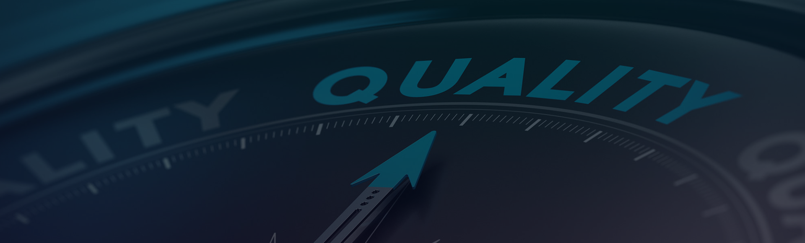
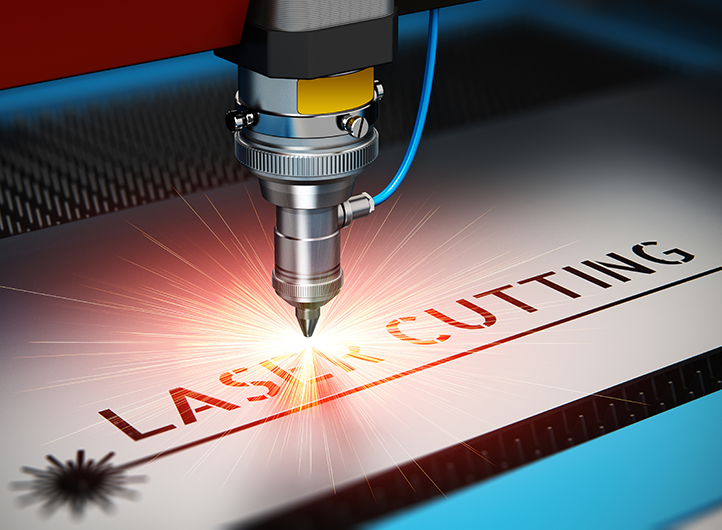

Quality
Quality is at the core of everything we do. We ensure precision, reliability, and consistent performance in every solution, delivering results that you can trust.

QUALITY ASSURANCE
Our firm’s topmost priority is quality, and we stick to
industry-specific standards to ensure that it is maintained.
To ensure compliance with established industry standards,
all of the offered products are manufactured using advanced
technology and high-tech machines.
Throughout the manufacturing process, a strict quality control
system is in place to ensure the accuracy and efficiency of
each laser machine.
Our Quality Pillars
At Axicon Automation, we follow a rigorous framework to ensure every industrial solution meets the highest standards of precision and performance.
COMMITMENT
AXICON AUTOMATION will provide customers with concentrated services to help solve obstacles before and after purchase, ensuring a smooth buying experience.
DEVELOPMENT
We accelerate growth by advancing processes and meeting customer needs through continuous quality improvements.
INSPECTION
Every machine part undergoes strict quality control, including supplier inspection reports and in-house monitoring.
PROCESS CONTROL
From machine bed to final assembly, all processes strictly follow QMS standards to ensure reliability.
NATURE-FRIENDLY
“The environment is where we all meet; where all have a mutual interest.” — Lady Bird Johnson
PERFORMANCE
By maximizing performance, we ensure financial stability, productivity, and uninterrupted company growth.